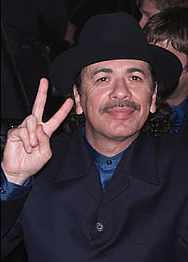
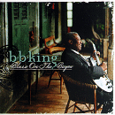
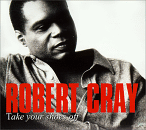
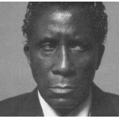
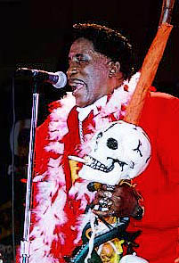
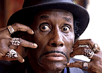
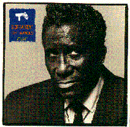
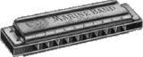
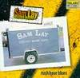

(события - объективно, толкования - сердцу не прикажешь)
2000 |
февраль |

Грэмми, розданные 23 февраля 2000 года, не могли не порадовать любителей старого доброго рока. Еще бы: триумфальное возвращение Сантаны! Так что, не все так плохо, но в блюзовой части - обычная история. Как есть зачеты, проставляемые за посещаемость, так же "автоматом" получили очередные "Грэмми" БиБи Кинг и Роберт Крей. Не люблю Роберта Крея вообще, но по степени бесконфликтности нынешний альбом ставит небывалый рекорд скучищи. А БиБи Кинг - любимый артист, и на мой вкус его альбом - один из лучших за прошлый год: мастерски сыгранный джем на старые любимые темы в кругу добрых друзей... Но - не грэммиевый, ребята, не грэммиевый... (Кстати, "Грэмми" за традиционный блюз в следующем году зарезервирован за альбом БиБи Кинга же "Let The Good Times Roll"! Плохо, если в следующем году академики решат, что БиБиКингу уже много раз давали, надо кому-то еще. И заслуженный альбом пролетит.). Беда с "Грэмми" по специфическим жанрам: они распределяются общим голосованием, и тут массовая некомпетентность решает все. О причинах уже было сказано в прошлом году. Вред - в том, что вместо необходимой популяризации блюза, "граммофончик" становится еще одной заслонкой, сужающий знание широкой публики о блюзе - до двух-трех раскрученных имен. Хорошо, что сейчас это БиБи Кинг. Страшно, когда Sony протащит в эти символы Кеба "Чего-изволите" Мо'.
 Category 59 Traditional Blues Album |
 Category 60 Contemporary Blues Album |
полный список лауреатов |
Кстати, хотите послушать современную народную музыку? Включайте Тома Уэйтса "Mule Vatiations": он победил в соответствующей (62-й) категории. В общем, да... Только, как заметил П.Ганнушкин, раньше примерно то же самое премировали как альтернативу.

12 февраля 2000 года, в клинике под Парижем ушел из жизни еще один из тех немногих "наших", кто был "лазутчиком" в мире поп-рока: экстравагантный неповторимый абсурдный блестящий черный фигляр-баритон Скриминг Джей Хокинс... Таких людей вы уже больше не увидите. Ему было 70, он вышел на профессиональную эстраду 49 лет назад, а от его дебютной пластинки до последнего альбома пронеслось 48 лет... Полвека без малого Вопящий Джей Хокинс был пинком под зад лощеным поп-звездам и кукишем под нос всей системе шоу-бизнеса. Он дорого заплатил за эту свою роль: пел бы гладко - жил бы сладко!.. Франция для него - вынужденная эмиграция, на родине публике не хватило самоиронии и чувства юмора для адекватного восприятия его музыки. А уж полит-не-корректность его высказываний - по американским меркам просто непростительна!
"The white man is superior and the black man stinks. I've never seen a Black armpit in a deodorant commercial on TV, only a white armpit."- Белый человек круче во всем, а черный - только воняет. Я никогда не видел черную подмышку в рекламе дезодорантов на ТВ, только белую подмышку".Не будучи блюзмэном по музыке, он был шоублюзмэном по жизни и на сцене; что такое блюз, он знал: "Being hungry, being evicted, your wife leaving you for another man, and your children calling him "daddy."- "Когда ты голоден, без крыши над головой, жена ушла к другому и твои дети называют его "папой". |
 |
Блюзы он тоже пел, иногда очень противные, вроде "Запорного блюза", написанного на автобиографическом материале - со всеми живописными подробностями. Он сочинил один из самых блюзовых стандартов рок-музыки: "I Put A Spell On You". Естественно для блюзмэна, самая популярная его песня побывала в хит-парадах в исполнении Creedence Cleawater Rivaval, а нынче - Marilyn Manson, но только - не в его собственном. И многие, кто знают песню, не знают автора... О Скриминг Джее Хокинсе вообще не часто вспоминали в последние годы. Но, поверьте, нам его будет очень не хватать. Он один был мощным балансом целому хору попсы голимой. Теперь, без него, корабль еще больше накренится на тот борт.


Празднования 13-летия программы "Весь Этот Блюз" открылись в середине января презентацией альбома "Весь Этот Наш Блюз". Приключения с альбомом - продолжаются. Но польза уже есть. Впервые после долгого перерыва удалось собрать в одном концерте все сливки московского блюза, а под это дело - уже получить "выход в средства массовой информации". Этот прорыв сразу дал импульс к активизации блюзовой жизни в нашем блюзовом захолустье. Согласитесь, за весь прошлый год событием был только импортированный "Эфесом" двухдневный трехучастниковый блюз-фестиваль. Конечно, приезд Эдди "Зе Чифа" Клиаватура - весомей. Однако ж блюз один раз в год - не моя диета.

23 февраля в ДомЖуре открылся 3-й Московский фестиваль губной гармоники (посвященный, разумеется, тоже славному 13-летию) и продолжился концертами-джемами в "Запаснике". Надо признать, что аншлаг фестивалю был обеспечен "халявщиками" (в данном случае это всего лишь рабочий термин, обозначающий бездоходных от зрителей; организаторы фестиваля заранее планировали более половины безбилетников); но все-таки 90 билетов были проданы, что позволило провести фестиваль "по нулям" - с финансовой точки зрения! Слава отважным, покупающим билеты! Я не раз говорил, что блюз на пластинках - бледное отражение блюза живого. Настоящий блюз - это только лицом к лицу. Если хочется слушать блюз в Москве - надо вытащить из кармана рублей 50-80. Частенько это плата авансом. Но что делать?.. А иначе-то не будет вообще ничего.Это были актуальные финансовые сомнения. Сейчас обсуждается возможность проведения хорошего и доступного блюз-фестиваля в Москве. Всем заинтересованным лицам - просьба присоединяться и поддержать. blues@rinet.ru.
Что касается творческих итогов гармошечного фестиваля - опубликуем, когда отсканируем фотографии. Во Владимире, где в последнее время организован цикл регулярных блюзовых концертов (каждую пятницу в Доме работников искусств), так же состоялся вечер к 13-летию программы "ВЭБ". Играли Алексей Барышев и "The Blackmailers Blues Band";(Владимир), "J.A.M."(Арзамас-Н.Новгород), Elizabeth Vladeck (Нью-Йорк, США). Джемовал - Михаил Мишурис, вокал, гармоника, гитара. Классный концерт и отличная блюзовая атмосфера! (Ох, не сглазил бы...).
Интервью группы Вольный Стиль для Олега "Мистер Твистер" Усманова и газеты Музоон.
В.Русинов сообщает: "В первый день весны 2000 года в Питере..."
Продолжается работа над альбомом "Double Trouble and Friends". Теперь известен более точный список друзей:
Coco Mantoya, долгие годы проходивший стажировку у Джона Мэйэлла, участник одного из составов "Кэннд Хит", во второй половине 90-х нашел себя в поп-роке с легким блюзовым привкусом. Американские критики довольны. Новый альбом - "Suspicion"

Сэм Лэй - барабанщик и вокалист, чикагский ветеран, участник классических блюзбэндов Мадди Уотерса и Хаулин Вулфа (а так же первого состава Пол Баттерфилдз Блюз Бэнд). Его новый альбом "Rush Hour Blues" демонстрирует звучание современного клубного блюза в Чикаго. Ничего особенного с одной стороны, бесценный чикагский блюз - с другой.

Журнал Livin'Blues предлагает список блюзовых альбомов, наиболее часто звучавших в блюзовых радиопрограммах 1999 года: http://www.thebluehighway.com/lb9950.html
Бывшие новости |
Январь-Февраль 1999 |
Март 1999 |
Ноябрь-Декабрь 1999
Январь 2000 |
Февраль 2000 |
Март 2000 |
Апрель 2000